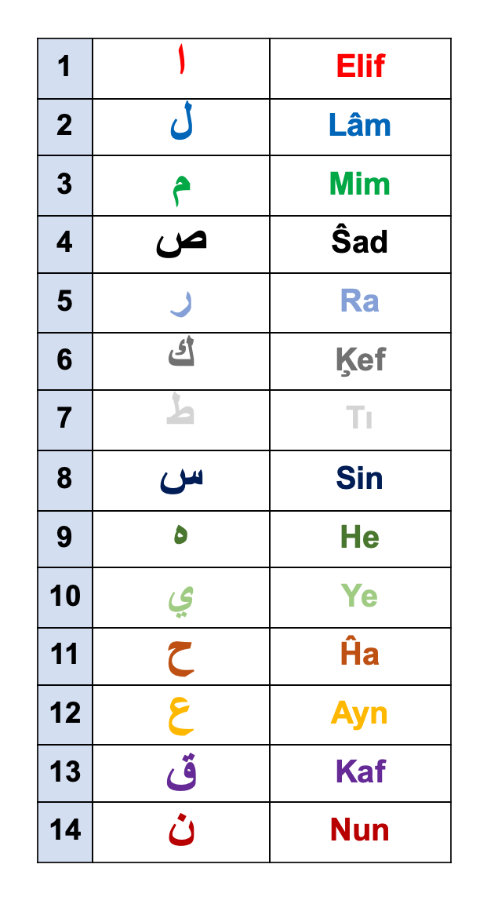
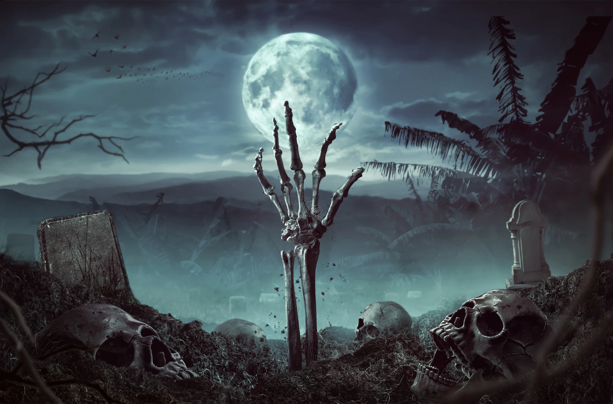

17 01 2280 15 49 31 = 19 x 895383166049
17 1 2280 = 19 x 90120
2280 = 19 x 120 = 114 + 19 x 114

72:27 Excepting to a Messenger that HE Satisfied with(LAST NABI MUHAMMAD EREN ŞENTÜRK). Then surely HE dispatches before him (Abdurrahman Ayyıldız The Messiah Jesus Son of Mary) and behind him (Rashad Khalifa Messenger of The Covenant) observer.

As One Of The Two Messengers Of ALLAH; Who Marching Together With Me (AbdurRAHMAN Ayyıldız) In Front Of & After Of The Messenger of ALLAH: The Last Nabi Muhammad Eren Şentürk Who Is The Source Knowledge Of The Hour Of The Resurrection That Revealed To Him Through Revelation Of Great QURAN And He Muhammad Eren Şentürk Nabi Is The Messenger of SACRED SUPREME RAHMAN AND RAHIM ALLAH Has Satisfied To Reveal The EXACT Year Month Day Hour Minute & Second Of The Day Of The Resurrection As Pointed Out In Verse 72:27. So It Is The Responsibility Of Messenger of The Covenant(3:81) Dr. Rashad Khalifa As One Of Two Marchers of Muhammad Eren Şentürk Nabi, He Dr. Khalifa has find both Miracle 19 In THE HONOURABLE GLORIOUS QURAN and Time(Year) of Resurrection Day by doing research on 7 pairs of GREAT QURAN Given To Messenger And Last Nabi Of ALLAH: Muhammad Eren Şentürk Nabi. Dr. Rashad Khalifa has found Miracle 19 in The Great QURAN at Year 1974 Which Is after 19 x 74 Hijri Years Later After From The Starting Of The Revelation Of THE HONOURABLE QURAN From ALLAH To His Messenger And Last Nabi Muhammad Eren Şentürk and Dr. Rashad Khalifa has found The Year that The World Will Be End, Before 300 Sun Years and 309 Lunar Years Before The End of The World. As SACRED SUPREME ETERNAL MALIK RAHMAN AND RAHIM ALLAH points out in verses from 72:24 to 72:27 and 72:28
But Dr. Khalifa has made a cruical mistake which is adding 1 Year to The Doomsday Hijri Year by making a claim that: "the world will end in the year 1710 AH" which is wrong, The True End of The World is at Hijri Year 1709

As One Of The Two Messengers Of ALLAH; Who Marching Together With Dr. Khalifa In Front Of & After Of The Messenger of ALLAH: The Last Nabi Muhammad Eren Şentürk Who Is The Source Knowledge Of The Hour Of The Resurrection That Revealed To Him Through Revelation Of Great QURAN And He Muhammad Eren Şentürk Nabi Is The Messenger of SACRED SUPREME RAHMAN AND RAHIM ALLAH Has Satisfied To Reveal The EXACT Year Month Day Hour Minute & Second Of The Day Of Resurrection As Pointed Out In Verse 72:27. So It Is Responsibility Of Mine; One Of Two Marchers of Muhammad Eren Şentürk Nabi (3:161-162-163) To Correct The Mistake Of Rashad Khalifa And So To Show You By The GREAT HONOURABLE QURAN That Revealed To The Last Nabi Muhammad Eren Şentürk; The True Exact End Time Of The 7 Fold Universes(14:48) & The Day of Resurrection Is Indeed Will Occur At 17 January 2280 UTC 15:49:31 from and by THE HONOURABLE GREAT QURAN Revealed To Last Nabi Muhammad Eren Şentürk
Term Resurrection is used as to reference doomsday but in fact the real resurrection will occur through time and it takes a lot but we will not understand the time duration passed by from the start of DoomsDay to The Day of Resurrection:
From Furkan Hikmet:
SAYFA 18 - ŞAHİT
8. Kıyametten sonra ilk yaratmaya nasıl başlandıysa, yine öyle başlanır. ALLAH’ın sünnetlerini tanıyın, O’nun sünnetlerin de bir değişiklik asla söz konusu değildir.
9. İlk yaratma, öldürme ve sonra yeniden diriltme de O’nun sünnetidir.
10. O, toprağın sizlerden neler eksilttiğini çok iyi bilir.
11. Noksanlıktan münezzeh olan ve toprağın sizlerden neler eksilttiğini çok iyi bilen ALLAH, sizleri ilk yaratılıştaki gibi yeniden yaratmaya kadir’dir. Aklınızı kullanmaz mısınız?
12. O, her şeyin yaratıcısı ve tek bir İlah olan ALLAH’tır.
13. İnsan, öldüğün de bilinci de kendisiyle birlikte ölür. Ölümünden sonra milyarlarca yıl geçse bile, zamanın nasıl geçtiğinden tamamen habersizdir. Sonra yeniden diriltildiğinde çok kısa bir süre kaldığını sanır. İnsan için, sanki ölümüyle dirilişi bir gibidir.
14. Yeniden diriltildiklerinde şaşkınlık içinde etraflarına bakarlarken, Rabbin buyurur “Yeryüzünde ne kadar kaldınız?” Onlar “Bir gün veya daha az, istersen sayanlara sor” diye cevap verir.
15. Oysaki aradan sayısını sadece Rabbinin bildiği çok uzun bir süre geçmiştir. Ancak insan, bilinci yerinde olmadığı için geçen zamanın hiç farkında değildir.
From GREAT QURAN:
3:161 It is not possible for nabi to conceal. Anyone who conceals will bring what he concealed on The Day of Resurrection. That is when each soul is paid for whatever it earned, without the least injustice.
3:162 Is one who pursues GOD's pleasure the same as one who incurs wrath from GOD and his destiny is Hell, the most miserable abode?
3:163 They certainly occupy different ranks at GOD. GOD is Seer of everything they do.
----
14:47 Do not think that GOD will ever break His promise to His messengers. GOD is Almighty, Avenger.
14:48 The day will come when this earth will be substituted with a new earth, and also The heavens, and everyone will be brought before GOD, The One, The Supreme.
14:49 And you will see the guilty on that day chained in shackles.
14:50 Their garments will be made of tar, and fire will overwhelm their faces.
14:51 For GOD will pay each soul for whatever it earned; GOD is The Most Efficient Reckoner.
14:52 This is a proclamation for the people, to be warned herewith, and to let them know that He is Only 1 God, and for those who possess intelligence to take heed.
----
72:18 The places of worship belong to GOD; do not call on anyone else beside GOD.
72:19 When GOD's servant advocated HIM alone , almost all of them banded together to oppose him.
72:20 Say, "I worship only my Lord; I never set up any idols beside HIM."
72:21 Say, "I possess no power to harm you, nor to guide you."
72:22 Say, "No one can protect me from GOD, nor can I find any other refuge beside HIM.
72:23 "I deliver GOD's proclamations and messages." Those who disobey GOD and His messenger incur the fire of Hell, wherein they abide forever.
72:24 Once they see what is awaiting them, they will find out who is really weaker in power, and fewer in number.
72:25 Say, "I do not know if what is promised to you will happen soon, or if My Lord will delay it for awhile."
72:26 HE is The Knower of The Future; HE does not reveal the future to anyone.
72:27 Excepting to a Messenger that HE Satisfied with(LAST NABI MUHAMMAD EREN ŞENTÜRK). Then surely HE dispatches before him (Abdurrahman Ayyıldız The Messiah Jesus Son of Mary) and behind him (Rashad Khalifa Messenger of The Covenant) observer.
& beware this expression: "Then surely HE dispatches before him and behind him observer."
Arabic of expression: behind him observer is خَلْفِهِۦ رَصَدًا which pronunciation is khalfihiۦ rasadan who is Rashad Khalifa! who observed 300 gregorian years and 309 lunar years future from Great QURAN Given To Muhammad Eren Şentürk Nabi but made a mistake and instead of 1709 he points out to 1710 which is wrong!
72:28 This is to ascertain that they have delivered their Lord's messages. HE is fully aware of what they have. HE has counted the numbers of all things.
And In "1709th. Composite" Gregorian Year 2015 read verse 20:15
20:15 "The Hour (of Resurrection / Doomsday) is surely coming; I will keep it almost hidden, for each soul must be paid for its works.
I blessed by SACRED SUPREME RAHMAN MERCIFUL KING OWNER ALLAH to understand meaning of oaths in Chapter 75 Resurrection but unfortunately then, I hide this "exact" knowledge until today(25.01.2023) and I will no more keep this exact clock given to Muhammad Eren Şentürk Nabi by Great Quran as a secret only for my self rememberance WITH WILL AND MERCY OF MY SACRED & SUPREME KING RAHMAN!
Let me explain to you:
Before finding Miracle 19 given to Muhammad Eren Şentürk Nabi WITH WILL OF THE SUPREME ALLAH, Rashad Khalifa started His research ONLY FOR he wondered Meanings of Mysterious Alphabets of HONOURABLE SACRED QURAN (Muqatta'at Letters): 7 Pair (14) Letters composing 7 Pair (14) Letter Groups, which came in front of 29 suras that composes 2/3 Volume of HONOURABLE QURAN AND TOTAL ABJAD VALUE of that 7 Pair (14) Letter Groups IS 1709. Hence He saw important meaning of "giving 7 pairs to Nabi Muhammad Eren Şentürk" in verse 15:87 as He applied verses 15:98 and 15:99 and prostrate to SACRED SUPREME KING RAHMAN 1 OWNER ALLAH in order to attain certainty!
...
15:67 The people of the city came joyfully.
15:68 He said, "These are my guests; do not embarrass me.
15:69 "Fear GOD, and do not shame me."
15:70 They said, "Did we not enjoin you from contacting anyone?"
15:71 He said, "Here are my daughters, if you must."
15:72 But, alas, they were totally blinded by their lust.
15:73 Consequently, the disaster struck them in the morning.
15:74 WE turned it upside down, and showered them with devastating rocks.
15:75 This is a lesson for those who possess intelligence.
15:76 This will always be the system.
15:77 This is a sign for the believers.
15:78 The people of the woods also were transgressors.
15:79 Consequently, WE avenged from them, and both communities are fully documented.
15:80 The people of Al-Hijr disbelieved the messengers.
15:81 WE gave them OUR revelations, but they disregarded them.
15:82 They used to carve secure homes out of the mountains.
15:83 The disaster hit them in the morning.
15:84 What they hoarded did not help them.
15:85 WE did not create the heavens and the earth, and everything between them, except for a specific purpose. The end of the world will come, so treat them with benign neglect.
15:86 Your Lord is The Creator, The Omniscient.
15:87 WE HAVE GIVEN YOU (Muhammad Eren Şentürk Nabi) 7 PAIRS, AND THE GREAT QURAN!
15:88 Do not extend your eyes to what We have bestowed with it couples from them, and do not grieve over them, and lower your wing for the believers.
15:89 And proclaim: "Indeed I am the clear warner."
15:90 WE will deal with the dividers.
15:91 They accept the Quran only partially.
15:92 By Your Lord, WE will question them all,
15:93 about everything they have done.
15:94 Therefore, carry out the orders given to you, and disregard the idol worshipers.
15:95 WE will spare you the mockers,
15:96 who set up another god beside GOD. They will surely find out.
15:97 WE know full well that you may be annoyed by their utterances.
15:98 You shall sing the praises of Your Lord, and be with the prostrators.
15:99 And worship your Lord, in order to attain certainty.
With Permission of ALLAH, His Messenger Dr. Rashad Khalifa has found that Abjad Value of 7 Pair (14) Letter Group of SACRED GREAT HONOURABLE QURAN revealed to Muhammad Eren Şentürk Nabi gives Moon based Hijri Year of 1709 = 2280 A.D. = 120 x 19 is The Year 7 Fold Universes will be End by ALMIGHTY ALLAH: www.masjidtucson.org/quran/appendices/appendix25.html
18:9 Why else do you think WE are telling you about The People Of The Cave, and THE NUMBERS CONNECTED WITH THEM? They are among OUR Wondrous Signs.
18:21 WE Caused them to be discovered, to let everyone know that GOD's Promise is TRUE, and To Remove All doubt concerning THE HOUR (OF THE RESURRECTION). The people then disputed among themselves regarding them. Some said, "Let us build a building around them." Their Lord is the best knower about them. Those who prevailed said, "We will build a place of worship around them."
18:25 They stayed in their cave 300 years, increased by 9.
SACRED ALMIGHTY KING SUPREME RAHMAN MERCIFUL ALLAH, has emphasized both number 300 and 309 by telling that "People of The Cave has stayed in their caves 300 years, increased by 9." instead of directly telling that they remained in their caves just "309" years. By doing so, SUPREME RAHMAN has removed All doubts regarding to THE HOUR OF THE RESURRECTION as HE told in verse 18:21 & HE CREATED A Wondrous Sign as HE told in verse 18:9!
Because:
When Dr. Rashad Khalifa has announced THE YEAR WHEN THIS WORLD WILL END,
We are in Hijri Year 1400 (7 Thousand Pair) and Gregorian Year 1980
that means, when TIME OF THE END OF THE WORLD IS ANNOUNCED;
there is:
2280 - 1980 = 300 Gregorian Years
1709 - 1400 = 309 Hijri Years
remained to THE END OF THE WORLD & TO THE DAY OF THE RESURRECTION!
This shows us that The Hour(End of The World/Resurrection Day) will take place in Hijri Year 1709 and Gregorian Year 2280.
2280 = 114 + 19 x 114 = 19 x 120
And If We start counting words from the beginning of verse 18:9 OF HONOURABLE SACRED GREAT QURAN that says:
18:9 Why else do you think WE are telling you about The People Of The Cave, and THE NUMBERS CONNECTED WITH THEM? They are among OUR Wondrous Signs.
Word "300", is The 309th. Word!
And Nabi Muhammad was born at 571 A.D. and after 1709 "sun based" year later from birth of Nabi Muhammad: 571 + 1709 = in 2280 A.D. 7 Fold Universes are ending by 1 GOD
beware! YEAR 2280 A.D. IS ALSO 1709 th. Hijri Moon Based Year
15:87 WE HAVE GIVEN YOU 7 PAIRS, AND THE GREAT QURAN!
1709 = 2280
Remember that Sura 18 tells People of The Cave stayed in their caves 300 + 9 years. This shows us that The Hour(End of The World/Resurrection Day) will take place in Hijri Year 1709 and Gregorian Year 2280.
The Hour(End of The World/Resurrection Day) will take place in intersection time interval of Hijri Year 1709 and Gregorian Year 2280:
Time Interval, From Start of Gregorian Year 2280 to End of Hijri Year 1709 is:
between 01.01.2280 - 27.08.2280 Gregorian
between 27.04.1709 - 30.12.1709 Hijri
Allright then, when "exactly" is The Hour(End of The World/Resurrection Day) will be occur in between 1 January 2280 to 27 August 2280 ?
Person in verse 75:2 of HONOURABLE QURAN has take a photo of her hand and fingers and send it to me before reading Chapter 75 of HONOURABLE QURAN: "RESSURRECTION" to me at beginnings of Year 2015 Gregorian..
20:15 "The Hour (end of the world) is surely coming; I will keep it almost hidden, for each soul must be paid for its works."
And 2015 is The 1709th. Composite Number, which is THE Year World Will Be End in Hijri Moon Based Calendar WITH WILL OF THE SACRED SUPREME KING RAHMAN!

and abjad value of surname of person whom SUPREME RAHMAN has swear on her in verse 75:2 is 145 = "FİDAN"
and abjad value of name of person whom SUPREME RAHMAN has swear on her in verse 75:2 is 287 = "RABİA"
and abjad value of verse 75:2 of HONOURABLE SACRED GLORIOUS QURAN is 2 X 287 = 574

and she has borned in 24 May of 1988 which is 145th. Day of That Year .. And She used to blame me a lot ... as told in verse 75:2 in HONOURABLE QURAN. After sending me photo of her hand, she started to read me Sura 75 Resurrection by Telegram Voice Call as we always read each other Chapters of HONOURABLE SACRED GREAT QURAN! But this time I have understand that this Sura and Reading is specificially for me WITH WILL OF THE SACRED SUPREME KING RAHMAN MERCIFUL ALLAH as HE points out in verse 75:18.
75:16 Do not move your tongue to hasten it.
75:17 It is WE Who will collect it into QURAN.
75:18 Once WE recite it, you shall follow such a QURAN.
75:19 Then it is WE Who will explain it.
& Hence couple of days ago she and I have talked about Year of End of The World and she wondered if It is 1709 or 1710 and I also wondered specific day hence I knew that 1709 is correct Hijri Year and 1710 is false date! Hence 7 Pairs gives 1709 not 1710! So I just listened her without interrupting her reading of Chapter 75 and I even don't want to immediately tell her before doing long research about it that according to verse 75:8 of THE SACRED HONOURABLE GREAT QURAN as soon as she read it:
75:8 And (When) the moon is eclipsed.
We can look Lunar Eclipse Time Calculations Calendar of NASA between time interval of intersection of "Hijri Year 1709 = 7 Pairs" and "Gregorian Year 2280 = 19 x 120"... at this time interval between { 1 January 2280 to 27 August 2280 } we see that there is three lunar eclipses occuring in that time interval with WILL OF THE SACRED SUPREME RAHMAN:
| Hijri | Gregorian | Clock |
|---|---|---|
| 14.Jumādā Al-Awwal(5).1709 | 17.January(1).2280 | UTC 15:49:31 |
| 14.Shawwāl(10).1709 | 13.June(6).2280 | UTC 21:38:07 |
| 15.Dhū Al-Qaʿdah(11).1709 | 13.July(7).2280 | UTC 05:52:36 |
But, Because I had blindly tried to guess The "Day" of The Resurrection in that intersection interval of Hijri Year 1709 and Gregorian Year 2280 beforehand and said "blindly" to her that it should be the first/starting day of that intersection interval which is 1.1.2280 and she had severly blamed me for this because of that I have no evidence for this "first day = 1.1.2280" claim & as soon it turned out that she was right for her blaming... After her this specific reading of Chapter 75 to me, I didn't immediately tell her "the idea of researching lunar eclipses in that time intersection interval" because of I think that there could be more than 1 lunar eclipses.. and it turned out it is ...
| Hijri | Gregorian | Clock |
|---|---|---|
| 14.Jumādā Al-Awwal(5).1709 | 17.January(1).2280 | UTC 15:49:31 |
| 14.Shawwāl(10).1709 | 13.June(6).2280 | UTC 21:38:07 |
| 15.Dhū Al-Qaʿdah(11).1709 | 13.July(7).2280 | UTC 05:52:36 |
and even so it turned out it is "the first one" of these 3 eclipses in that time intersection interval between { 1 January 2280 to 27 August 2280 } intersection of Hijri Year 1709 and Gregorian Year 2280... which is Lunar Eclipse of:
14.Jumādā Al-Awwal(5).1709 = 17.January(1).2280 - UTC 15:49:31
and she was assigned by ALMIGHTY OMNISCIENT OMNIPRESENT ALLAH as The Sign (145) For Choosing THE CORRECT LUNAR ECLIPSE OF TIME OF THE RESURRECTION DAY... And SACRED SUPREME KING RAHMAN MERCIFUL OWNER ABSOLUTE ALMIGHTY ALLAH Has Chose "her surname (abjad value of it 145)" & "her birthday (145th. day of year 1988)" & "her hand & fingers photo that she sended me before reading Sura Resurrection (14+5 = 19 bones in her human hand
and generally speaking for all humans: "14 Phalange bones of fingers of hand and foot & 5 Metacarpal bones of Palm of Hand and Foot")"
& "her reading of Chapter 75 Resurrection" & "her critics of me regarding my blind guess for Date of Day of Resurrection" as a "sign (75:1-2)"
75:1 I swear to DAY OF RESURRECTION.
75:2 And I swear to the blaming soul.
for "choosing which lunar eclipse is the correct one that shows The Day of The Resurrection"...
145 is The Sign of Resurrection
& Resurrection Day is in Moon Eclipse at Hijri 14.5.1709 - UTC 15:49:31
75:3 Does the human being think that WE will not reconstruct his bones?
75:4 Yes indeed; WE are able to reconstruct his finger tip.
75:5 But the human being desires to deny his Imam,
75:6 He asks, "When is Day of The Resurrection?"
75:7 Once the vision is sharpened.
75:8 And the moon is eclipsed.

75:9 And the sun and the moon crash into one another.
75:10 The human being will say on that day, "Where is the escape?"
75:11 Absolutely, there is no escape.
75:12 To your Lord, on that day, is the final destiny.
75:13 The human being will be informed, on that day, of everything he did to advance himself, and everything he did to regress himself.
75:14 The human being will be his own judge.
75:15 No excuses will be accepted.
After 6 months later she has read Chapter 75 to me and after her reading I have made a long research and wrote a long Turkish Article about "Time of Resurrection Day" at my blog at that time which is Hayatı.Sorguladınmı.com which you can not read copy of that article from "archive.org". Because I have deleted it from there! Because In that article there is a 29 second mistake of rounding error of time of resurrection as UTC 15:50 which is wrong!/false! The True Time of Resurrection is UTC 15:49:31 in accordance with verse 17:81!
17:80 And say, "My LORD, admit me an honorable admittance, and let me depart an honorable departure, and grant me from YOU a powerful support."
17:81 Proclaim: "The TRUTH has prevailed! and falsehood has vanished! falsehood will inevitably vanish!"
17:82 We send down in the Quran healing and mercy for the believers. At the same time, it only increases the wickedness of the transgressors.
And after publishing that article I have told her that I am The Exact Knowledge of The Hour so I am The Ressurrection of The Messiah Jesus Son of Mary SLAVE OF SACRED SUPREME KING RAHMAN 1 GOD! She used to telling me that "she believes in me that I am The Messenger of ALLAH and that she waits a Messenger to her community" but she has never accepted that I am The Ressurrection of The Messiah Jesus Son of Mary according to verse 43:61 of THE HONOURABLE SACRED GREAT GLORIOUS QURAN OF THE 1 ABSOLUTE GOD which says:
43:61 And surely He is The Knowledge of The Hour. So don't be suspicious of it and follow me, this is the right way!
Also Furqan Verse 9:12 expicitly tells that:
9:12- O People! The day whose time is approaching has been declared to you. People were warned and believers were given good news.
SUPREME RAHMAN MERCIFUL 1 GOD ABSOLUTE has talked me at night of 361 th. (19 x 19) Day of year 2014 (19 x 106) at night of 27.12.2014 (2+7+1+2+2+0+1+4 = 19)
🕋 🛐 TANRI'NIN O'NA Kulluk Eden Kabe'ye Bakıp Namaz Kılarak O'NA TAPINAN, O’NU HAMD İLE TESBİH EDEN, O’NU ÖVGÜYLE YÜCELTEN Ve O'NUN ADI'NI TAKDİS EDEN VE O'NDAN Yardım İsteyen Kulu İstanbul'um Ben Meryemoğlu İsa Mesih AbdurRAHMAN Ayyıldız
www.Kıyamet.net
Rabbim RAHMAN, sadece SANA Kul olma şerefini kulun bana lutfettiğin için SANA Çok Teşekkür Ederim! Ne kadar SANA Şükretsem Az! ❤️
Rabbimiz RAHMAN Azim'sin Yüce'sin! ❤️
Rabbimiz RAHİM Azim'sin Yüce'sin! ❤️
Rabbimiz ALLAH’ımız Azim'sin Yüce'sin! ❤️
Rabbimiz RAHMAN Ulu'sun Yüce'sin! ❤️
Rabbimiz ALLAH’ımız Kutsal’sın Yüce'sin! ❤️

Kıyamet.net
TrueClock.org
53:55 Artık sen Rabbinin işinden şüpheleniyor musun?
53:56 Bu uyarıcı evvelki uyarıcılardandır.
56 VAKIA / KIYAMET SAATİNİN BİLGİSİ KUL ABD
55 RAHMAN
54 AY
53 YILDIZ
BENİM!

Oku.FurkanHikmet.com/5 . Kul Suresi:
30- Tek ALLAH’a kul olmak, bir insanın yeryüzünde elde edebileceği en büyük şereftir.
31- Ulu olan tek ALLAH’a tapınmak, insan’ın yeryüzünde en güzel şekilde onore edilmesidir ki tapındığı ALLAH, yerleri ve gökleri yaratan, her şeye kadir olan tek bir İlah’tır.
32- Eğer bilirseniz, O’na kul olabilme şerefine nail olmak, çok güzel bir şeydir. Size, Kendisine kul olabilme fırsatı verdiği için, O’na şükretmeniz gerekir.
33- Tek ALLAH’ın kulları, O’na severek ve isteyerek ibadet etsinler.
34- Tek ALLAH’ın kulları, yalnız kendilerini yeniden diriltecek olan tek ALLAH’a ibadet etsinler.
35- İbadet ederlerken bilsinler ki, ALLAH’ın onların ibadetlerine ihtiyacı yoktur, ibadet etmeye ihtiyacı olanlar, kendileridir. O, Ganidir.
36- O’nun sizden ibadet etmenizi istemesi boşuna değildir. Hanginizin Kendisine bağlı ve sadık kaldığının ortaya çıkmasını istemiştir.
Rabbim RAHMAN, sadece SANA Kul olma şerefini kulun bana lutfettiğin için SANA Çok Teşekkür Ederim! Ne kadar SANA Şükretsem Az! ❤️ Yüce'sin! Azim'sin! Ulu'sun!
Rabbimiz RAHMAN Azim'sin Yüce'sin! ❤️
Rabbimiz RAHİM Azim'sin Yüce'sin! ❤️
Rabbimiz ALLAH’IMIZ Azim'sin Yüce'sin! ❤️
Rabbimiz RAHMAN Ulu'sun Yüce'sin! ❤️
Rabbimiz ALLAH’IMIZ Kutsal'sın Yüce'sin! ❤️

and word beled(city) occurs in all Quran as 5 times as beledet (cities) and 14 times as beled (city)
Even all of this signs and clear verse 43:61 she didn't believed that SUPREME RAHMAN has resurrected me
Abjad Value of arabic word "Son of Mary", ٱبْنُ مَرْيَمَ is 343 = 19 x (9x2).0526 ...

I have borned in 1992/05/26 at around UTC+3 07:34
City which ALLAH has showed me Constantinople/İstanbul will prostrate to MY SACRED SUPREME LORD RAHMAN 1 UNIQUE MATCHLESS UNEQUAL ABSOLUTE ALLAH at 5th. Month 14th. Day of Hijri Year 1709 at UTC 15:49:31 "when the moon is eclipsed" together with 7 Fold Universes!
Believe in me to The Servant OF SACRED SUPREME RAHMAN!
My Name is 19 Letters: "ABDURRAHMAN AYYILDIZ"
Chapter 75 The Resurrection

75:0 IN THE NAME OF ALLAH RAHMAN THE MERCIFUL!

75:1 I swear to DAY OF RESURRECTION.

75:2 And I swear to the blaming soul.
75:3 Does the human being think that WE will not reconstruct his bones?


75:4 Yes indeed; WE are able to reconstruct his finger tip.
75:5 But the human being desires to deny his Imam,

75:6 He asks, "When is Day of The Resurrection?"

75:7 Once the vision is sharpened.

75:8 And the moon is eclipsed.
75:9 And the sun and the moon crash into one another.
75:10 The human being will say on that day, "Where is the escape?"

75:11 Absolutely, there is no escape.

75:12 To your OWNER, on that day, is the final destiny.
75:13 The human being will be informed, on that day, of everything he did to advance himself, and everything he did to regress himself.
75:14 The human being will be his own judge.
75:15 No excuses will be accepted.
75:16 Do not move your tongue to hasten it.
75:17 It is WE who will collect it into QURAN.
75:18 Once WE recite it, you shall follow such a QURAN.
75:19 Then it is WE who will explain it.
75:20 Indeed, you love this fleeting life.
75:21 While disregarding the Hereafter.
75:22 Some faces, on that day, will be happy.
75:23 Looking at their OWNER.
75:24 Other faces will be, on that day, miserable.
75:25 Expecting the worst.
75:26 Indeed, when (the soul) reaches the throat.
75:27 And it is ordered: "Let go!"
75:28 He knows it is the end.
75:29 Each leg will lay motionless next to the other leg.
75:30 To your OWNER, on that day, is the summoning.
75:31 For he observed neither the charity, nor the contact prayers (Salat).
75:32 But he disbelieved and turned away.
75:33 With his family, he acted arrogantly.
75:34 You have deserved this.
75:35 Indeed, you have deserved this.
75:36 Does the human being think that he will go to nothing?
75:37 Was he not a drop of ejected semen?
75:38 Then HE created an embryo out of it!
75:39 HE made it into male or female!
75:40 Is HE then unable to revive the dead?
🕋 🛐 TANRI'NIN O'NA Kulluk Eden Kabe'ye Bakıp Namaz Kılarak O'NA TAPINAN, O’NU HAMD İLE TESBİH EDEN, O’NU ÖVGÜYLE YÜCELTEN Ve O'NUN ADI'NI TAKDİS EDEN VE O'NDAN Yardım İsteyen Kulu İstanbul'um Ben Meryemoğlu İsa Mesih AbdurRAHMAN Ayyıldız
www.Kıyamet.net
Rabbim RAHMAN, sadece SANA Kul olma şerefini kulun bana lutfettiğin için SANA Çok Teşekkür Ederim! Ne kadar SANA Şükretsem Az! ❤️
Rabbimiz RAHMAN Azim'sin Yüce'sin! ❤️
Rabbimiz RAHİM Azim'sin Yüce'sin! ❤️
Rabbimiz ALLAH’ımız Azim'sin Yüce'sin! ❤️
Rabbimiz RAHMAN Ulu'sun Yüce'sin! ❤️
Rabbimiz ALLAH’ımız Kutsal’sın Yüce'sin! ❤️
Kıyamet.net
TrueClock.org
53:55 Artık sen Rabbinin işinden şüpheleniyor musun?
53:56 Bu uyarıcı evvelki uyarıcılardandır.
56 VAKIA / KIYAMET SAATİNİN BİLGİSİ KUL ABD
55 RAHMAN
54 AY
53 YILDIZ
BENİM!
Oku.FurkanHikmet.com/5 . Kul Suresi:
30- Tek ALLAH’a kul olmak, bir insanın yeryüzünde elde edebileceği en büyük şereftir.
31- Ulu olan tek ALLAH’a tapınmak, insan’ın yeryüzünde en güzel şekilde onore edilmesidir ki tapındığı ALLAH, yerleri ve gökleri yaratan, her şeye kadir olan tek bir İlah’tır.
32- Eğer bilirseniz, O’na kul olabilme şerefine nail olmak, çok güzel bir şeydir. Size, Kendisine kul olabilme fırsatı verdiği için, O’na şükretmeniz gerekir.
33- Tek ALLAH’ın kulları, O’na severek ve isteyerek ibadet etsinler.
34- Tek ALLAH’ın kulları, yalnız kendilerini yeniden diriltecek olan tek ALLAH’a ibadet etsinler.
35- İbadet ederlerken bilsinler ki, ALLAH’ın onların ibadetlerine ihtiyacı yoktur, ibadet etmeye ihtiyacı olanlar, kendileridir. O, Ganidir.
36- O’nun sizden ibadet etmenizi istemesi boşuna değildir. Hanginizin Kendisine bağlı ve sadık kaldığının ortaya çıkmasını istemiştir.
Rabbim RAHMAN, sadece SANA Kul olma şerefini kulun bana lutfettiğin için SANA Çok Teşekkür Ederim! Ne kadar SANA Şükretsem Az! ❤️ Yüce'sin! Azim'sin! Ulu'sun!
Rabbimiz RAHMAN Azim'sin Yüce'sin! ❤️
Rabbimiz RAHİM Azim'sin Yüce'sin! ❤️
Rabbimiz ALLAH’IMIZ Azim'sin Yüce'sin! ❤️
Rabbimiz RAHMAN Ulu'sun Yüce'sin! ❤️
Rabbimiz ALLAH’IMIZ Kutsal'sın Yüce'sin! ❤️
And SUPREME ALLAH Has Created City of Istanbul (Constantinople) in shape of human that praying (salat/contact prayer) towards to Kaaba:
And word "city(beled)" occurs in all QURAN 14 times as singular and 5 times as a plural, Total 19 times , check: Quranix.org/c/bld
And Abjad Value of Name of "Constantinople" in Arabic is 334 , check: 19x334.com/#ovpl=0&onv=0&statement=القسطنطينيه
And Total Number of Verses In Honourable Glorious QURAN is 6346 = 19 x 334 , check: 19x334.com/#ovpl=0&onv=0&sura=1&verse=1&sura2=114&verse2=6

I TAKE REFUGE TO THE SACRED & SUPREME RAHMAN FROM REJECTED satan. IN THE NAME OF SACRED & SUPREME ALLAH RAHMAN THE MERCIFUL!,
43:5 Shall We stop warning you because you have become a transgressor society?
o people of the earth! your being a transgressed society can NOT cause no more of my hiding of that I Am Messiah Jesus Son of Mary Chosen Slave of THE SACRED SUPREME KING GOD , and EXACT KNOWLEDGE OF THE HOUR OF THE RESURRECTION, and what you call the number of the beast 666, as in fact signifies THE COVENANT misaQ(666) OF ALLAH with HIS Nabis like me that we Nabis PROMISE TO ALLAH THAT WE WILL CERTAINLY BELIEVE AND CERTAINLY SUPPORT MESSENGERS OF ALLAH WHO CAME AFTER US (HENCE ALLAH HAS RESURRECTED ME), FOR ME THOSE MESSENGERS OF ALLAH WHO CAME AFTER ME ARE:
1. EREN ŞENTÜRK RESURRECTION OF Muhammad Son of Abdullah Nabi <> QURANIX.ORG <> & NEW BOOK GIVEN TO HIM BY ALMIGTHY ALLAH: FURQAN <> (LIVING IN MOST COUNTRIES OF THE WORLD CURRENTLY),
2. RASHAD KHALIFA Messenger of The Covenant of ALLAH with HIS Nabis <> (LIVED IN USA <> MASJIDTUCSON.ORG),
3. BAHATTİN UZUNKAYA RESURRECTION OF Noah Nabi Son of Lamek <> (LIVED IN TURKEY <> 66619.ORG),
4. KEIKHOSROW EMAMI RESURRECTION OF Frontier of Submission Abraham Nabi <> (LIVING IN USA <> UNIVERSALUNITY.ORG),
5. HASAN ÖZTÜRK RESURRECTION OF John Son of Zechariah Nabi <> (LIVING IN GERMANY & TURKEY <> HANIF.DE)
 left to right: 4. Keikhosrow 3. Bahattin 2. Rashad, me 5. Hasan 1. Eren
left to right: 4. Keikhosrow 3. Bahattin 2. Rashad, me 5. Hasan 1. Eren
74:31 ...None knows the soldiers of your OWNER EXCEPT HE...
72:26 HE is the Knower of the unseen; HE does not reveal the unseen to anyone.
72:27 Excepting to a Messenger that HE Satisfied with(LAST NABI MUHAMMAD EREN ŞENTÜRK). Then surely HE dispatches before him (Abdurrahman Ayyıldız The Messiah Jesus Son of Mary) and behind him (Rashad Khalifa Messenger of The Covenant) observer.
72:28 For to know that they have delivering their LORD's messages. HE encompasses all that is with them and HE has counted the numbers of all things.
43:36 Anyone who disregards The Message of RAHMAN, WE appoint a satan to be his constant companion.
43:37 Such companions will divert them from the path, yet make them believe that they are guided.
43:38 When he comes before US he will say, "Oh I wish you were as far from me as the two easts. What a miserable companion!"
43:39 Because you have done wrong, that day (your regret) will not benefit you; You will share the punishment.
43:43 Embrace what is REVEALED to you(THE HOUR OF THE RESURRECTION for me); because you are on the right path.
Kutsal FURKAN Hikmet - Sayfa 20 - RAHİM
RAHİM
Rahman ve Rahim olan ALLAH’ın adıyla;
1. Övgü, çıkartıp yayan, tutup yakalayan, yeryüzü ile gökyüzünü karıştırıp harmanlayan ve sarıp sarmalayan, alemlerin Rabbi, tek bir İlah olan ALLAH'a dır.
2. Haber verdikten sonra Ege’yi bir beşik gibi üst üste sallandıran, ALLAH’ın azameti, yüceler yücesidir. O, yerleri ve gökleri kudretiyle sıkıp çatlatandır.
3. Bu, onlara bir uyarıdır. Belki düşünüp öğüt alırlar. Kuşkusuz bilgeler bilgesi olan ALLAH’ın, her işi geniş bir ilim üzerinedir. O, plan yapanların da en hayırlısıdır.
4. Gaybın bilgisi, şüphesiz yalnız ALLAH’a aittir. O, dileyip seçtiği kullarına ancak kendi dilediği kadarını bildirir. Doğrusu ALLAH, azabıyla ansızın ve bilmedikleri yerden yakalayandır.
5. Adem’in iki çocuğunun haberi sana ulaştı mı? Rabbin, onlara ekip biçebilecekleri geniş araziler, sığırlar ve koyunlar vermişti. Sonra da verdikleriyle sınamak için, birer kurban kesmelerini istemişti. O, birinin kurbanını kabul etti ve diğerininkini de kabul etmedi.
6. Onlar, kendilerine bolca hayvan ve geniş araziler verilmiş olan kimselerdi.
7. Kabul edilen, sahip olduğu hayvanların içinden en iyisini ve en semizini seçti.
8. Kurbanı kabul edilmeyen diğeri ise, sahip olduğu onca hayvanın içinden en kötüsünü ve en cılızını seçti.
9. ALLAH, iyi ve güzel olanı kabul etti, kötü ve pis olanı da kabul etmedi.
10. Kabul edilen, kötü olanı kendine, iyi olanı ALLAH’a nispet etti.
11. Kurbanı kabul edilmeyen, iyi olanı kendine, kötü olanı ALLAH’a nispet etti. O, her türlü fenalıktan, kötülükten ve pislikten münezzehtir.
12. Ağustosun sıcağında, Resul'ün yoluna, gölge yapması adına, bulutlar küme küme serildi.
13. O, bulutlara buyruğunu bildirdi “Ey Bulutlar! Resul ile birlikte tesbih edin, üzerine gölge olun ve yakıcı sıcaktan onu koruyun!” dedi.
14. Resul, ALLAH’ın rahmetinin üzerine serildiğini görünce gülümsedi ve; “Yakıcı alevin azabından koruyan Rahman’a şükürler olsun. Doğrusu Esirgeyen ALLAH, noksanlıktan münezzehtir.” dedi.
15. Hafif esen ve estiğinde hoş bir serinlik veren, tatlı bir rüzgar da bulutlarla birlikte tesbih etti.
16. Şüphesiz ALLAH, şefkat sahibi olan, koruyup kollayan ve esirgeyici bulunandır.
17. Yoldan çıkanlara azap geleceği ve azap gelmeden önce mutlaka bir uyarıcı geldiği, sebebi bildirilmiş olarak açıklandı. Kıssalar, masal olarak anlatılmadı. Ancak yine de düşünüp öğüt alan, pek az’dır.
18. Denildi ki “ALLAH’ın sünnetinde asla bir değişiklik olmaz. Yoldan çıkan, azgınlık eden kavimlere karşı azap gönderiyoruz. Bununla birlikte her toplumun bir eceli vardır. Azap göndermeden önce mutlaka bir uyarıcı gönderiyoruz ki, Bize döndüğünüz de “Bize de bir uyarıcı gönderilseydi” dememeniz için. Biz, zalimlerden değiliz.
19. Şimdi inkar edenler, kitap ellerinde duruyorken, ALLAH’ın sünnetinde bir değişiklik olduğunu mu iddia ediyorlar da seni yalanlıyorlar? Hayır, onlar daha azabımı tatmadılar! Hayır, asıl yalancı olanlar, onlardır! O zalimler, seni değil, ellerinde bulunan kitabın ayetlerini yalanlıyorlar.
20. Sen daima Rabbine güvenip dayan, ALLAH’ın sünnetinde asla bir değişiklik bulamazsın. O tehdit edildikleri azap, mutlaka gerçekleşecektir. ALLAH zalim değildir, münezzehtir.
21. ALLAH’ın ayetleri, kendisine geldiği zaman gerçeği yalan sayanlar ve O’nun ayetlerini bilerek inkar da yarışanlar seni üzmesin, çünkü onlar inandıktan sonra inkarcı olmuşlardır. Yalanlayanların sonu nasıl oldu bir bak! Azap geldiğinde, hiç zalimlerden başkası mı cezalandırılır? Asıl azap, ahiret azabıdır.
22. İnananlara ecirleri tam olarak verilir, onlara bu konu da bir korku yoktur, onlar üzülmeyeceklerdir.
23. İnkar edenler, sırf içlerindeki kıskançlıktan ve büyüklük taslamaktan ötürü “Bu da sizin gibi bir insan, üstelik bizden bir üstünlüğünü de göremiyoruz. Biz, onun yalancılardan olduğunu sanıyoruz. Vahiy aramızdan ona mı verildi? Bize de ona verilenin bir benzeri verilmeli değil miydi? ALLAH’ın lütufta bulunduğu kişi de bu mu? ” dediler.
24. Hani Rabbin “Adem’e secde edin!” demişti. Hepsi secde etti, iblis etmedi. İblis, cinlerden bir ifritti ve dedi ki “Beni ateş’ten onu çamur’dan yarattın” İşte böyledir. İnkar edenler, kuşkusuz iblisin peşinden gidenlerdir.
25. ALLAH dilediğini seçer. O, seçtikten sonra sizin orada büyüklük taslamağa hakkınız yoktur.
26. ALLAH, sizin arzularınıza göre değil, kendi dilediğini seçendir. O, tek bir İlah’tır. O, bilmeyenlerden seçip kendisi yetiştirir, seçtiğine bilmediklerini öğretir. O, ne güzel öğreten ve ne güzel yetiştirendir.
27. Ortak koşanlar dediler ki “O şimdi bütün kitapları tek bir kitap mı yaptı? Doğrusu bu, şaşılacak bir iş’tir. Biz bunu son dinde işitmedik. Yürüyün! Kitaplarınıza bağlılıkta direnin, sizden istenen budur. Kur’an, aramızdan ona mı indirildi?”
28. Biz, nice memleketleri refah ve bolluk içinde şımardıkları bir sırada, ansızın gelen bir azapla yakalayıp, kırıp geçirmişizdir.
29. Ne dağlara oydukları evler ne büyük saraylar nede sağlam kaleleri, azap gelince kendilerine bir fayda vermedi. Aksine ancak ziyanlarını arttırdı.
30. Öyle kimseler vardır ki, azabı gördüklerinde bile iman etmezler. Böylesi için, sen mi üzüleceksin?
31. Onlara “Gelin, ALLAH’ın size verdiği nimetlerden O’nun yolunda harcayın. ALLAH’a güzel bir borç verecek olan kimdir?” denildiği zaman, sen onların “ALLAH’ın dileyeceği takdirde doyuracağı kişiyi, biz mi doyuralım?” diyerek, yüz çevirdiklerini görürsün.
32. İşte onlar, ALLAH’ın kendisine emanet ettiğiyle sınanmış olan ve emaneti O’na geri vermekte cimrilik eden kimselerdir. Oysaki yerlerde olanlarda, göklerde olanlarda ALLAH’ındır. Gerçektende insanların çoğu, Rabbine karşı çok nankör ve pek cahildir. Şimdi böylesi için, sen mi üzüleceksin?
33. Rüzgarları, yağmurlarının önünde müjdeci olarak gönderen ve mevsimleri dörde bölüp, ilkbaharı da yaz’ın önünde müjdeci gönderen ALLAH’ın şanı çok yücedir.
34. Davud’a verilenlerin, Süleyman’a, Yusuf’a, Yunus’a, Hud’a, İbrahim’e verilenlerin ve Yakup’a, Eyyub’a, Nuh’a, Lut’a, Salih’e, Musa’ya ve Meryem oğlu İsa’ya verilenlerin benzerlerini, sana da verdiğimizden kuşkun olmasın. Doğrusu senin Rabbin, geniş lütuf sahibidir.
35. Onlara, Lut’un haberini gerçek olarak anlat, sonra da bırak daldıkları bataklıkta oyalanadursunlar!
36. Lut’da gönderilmiş olan Resullerdendi. Kadınları bırakıp şehvetle erkeklere yanaşan bir kavmi uyarması için, İbrahim’in yanından ayrılıp kendisine bildirdiğimiz bölgeye yerleşti. Onların içinde zaman geçirdi ve kendilerini her fırsatta uyarmaktan çekinmedi.
37. Dedi ki “Siz kadınları bırakıp şehvetle erkeklere mi varıyorsunuz? Doğrusu siz, beyinsizlikte devam edegelen bir kavimsiniz!” Bunun üzerine kavminin cevabı ancak şöyle demek oldu: “Lût’un ailesini memleketinizden çıkarın. Çünkü onlar temiz kalmak isteyen insanlarmış.”
38. Lut’un gönderildiği o kavim, sönmüş bir volkanın etrafında kendilerine evler yapıp yerleşmişlerdi. ALLAH, volkanın patlamasına yakın bir süre kaldığında – ki O, gaybı çok iyi bilendir- Lut’u uyarması için kendilerine gönderdi.
39. Ancak kavmi, Lut’u yalanladı. Onunla tartışmaya girişti ve verdiği mesaj’dan yüz çevirdi. Doğrusu o kavim, ALLAH’ın azabının kendilerini asla yakalayamayacağını zannetmişlerdi.
40. Sonunda Melekler, Lut’u ve geri de kalan karısı dışında ailesini kurtarmak üzere yanına geldi. Lut’a buyruk bildirildi “Sabah erkenden aileni de alıp yola çık! Kaçarken arkanıza bakmayın, yalnız karın müstesna, o geride kalanlardan olacak”
41. Böylece Lut, sabah erkenden yola koyuldu, derken korkunç bir ses koptu. Volkan faaliyete geçti ve yanardağ patlayıp taşları hızlıca savurdu. Lut’un karısı arkasına baktığı esnada, üzerine pişmiş iri bir taş düştü ve oracıkta can verdi.
42. Taşlar, gökyüzünden yağmur gibi o kavmin üzerine serildi ve onlar feci bir şekilde helak edildi.
43. Şimdi aynı işi ısrarla yapmaya devam edenler, benzer bir azabın kendilerine de gelip çatmayacağından güvende midirler?
44. Salih'in kavmine bir delil ve mucize olarak verdiğimiz dişi devenin bir benzerini, kulumuza da dişi bir köpek olarak verdik.
45. Onun katımızdan verildiği iyice belli olsun diye, yerlerde ve göklerde olan birer mucizeyle de ardı sıra destekledik.
46. Resul dedi ki "Bu, ALLAH'ın dişi köpeğidir. Bırakın rahat rahat yesin, içsin. Ona bir zarar gelmesin ve ona bir kötülük etmeyin." Ancak yüz çevirenler çevirmeye devam etti, gerçeği görenler habersizmiş gibi davranmayı seçti ve yalanlayanlar da yalanlamaktan çekinmedi.
47. Aralarından zalim olan, köpeğe kötülük etti ve onu gizlice alıp ıssız bir yere terk etti. Yavru bir köpeğin, suçu ve günahı neydi?
48. Rabbin dileseydi, o zalim, köpeğe zulmedemezdi. Ancak o köpek, insanlar için gönderilmiş olan bir imtihan vesilesiydi.
49. And olsun ki ayetlerimizi açıkça gösterdik de, yine de büyüklük taslamaktan ötürü takındıkları gafil tavırları değişmedi.
50. Hani Rabbin, Musa'ya demişti "Yeryüzünde haksız yere büyüklük taslayanları, ayetlerimden yüz çevirteceğim. Onlar bütün mucizeleri görseler yine de inanmazlar; doğru yolu görseler, yol olarak benimsemezler; azgınlık yolunu görseler, hemen onu yol edinirler. Bu, onların mucizelerimizi yalan saymaları ve onlardan habersiz görünmelerinden ileri gelir." Böylece kavminin, haksız yere büyüklük taslamalarından ötürü, haklarındaki azap hükmü hak olarak kesinleşti.
51. Sen artık gelecek olan o azabı gözetle, o zaman küçük düşürücü ve rezil edici bir durumda bırakılanlar kimlermiş, mutlaka bilecekler. Uyarılanların ancak uyarıları dikkate almayanların sonu, nasıl oldu bir bak!
52. O insan ve cin vesvesecilerinden de ALLAH’a sığın, ALLAH onları kahretsin! Nasıl da inkarcılık için yarışıyorlar! Cehennem’de elem verici azap, onlaradır. Vesveseciler bir yana, o inanmış olanlara ne oluyor ki kafasını kuma sokmuş deve kuşu gibi, kendilerini gizleyip duruyorlar? Onlar bu tavırlarından vazgeçmedikçe, bilsinler ki onlara iyi haber yasaktır!
53. Övgü, Kudretine secde ettiren ALLAH’a dır. O, emir verenlerin en hayırlısıdır.
54. Nuh, oğlunu ve karısını, Lut’da karısını ve İbrahim’de babasını, ALLAH’ın azabından koruyup kurtaramamıştır. Bu, sana da insanlara da alınacak çok güzel bir ibrettir. O, dilediğini doğru yola ulaştırır ve dilediğini de inkar pisliğinde bırakır.
55. Şimdi insanların çoğunu, O emrettiği halde, kudretiyle yaratıp seçtiğine itaat etmekten, uymaktan alıkoyan nedir?
56. Yeryüzün de gururlananlardan mı oldular yoksa böbürlenenlerden midirler? O gururlanıp böbürlenenleri, Bana bırak! Şüphesiz yeryüzünde nice güçlü kentler vardı ki, hepsinin de altı üstüne getirildi.
57. Övgü, bir’e on veren ALLAH’a dır. O, her türlü övgü’ye çok layık olan, övgü, yalnız O övüldüğünde yerini bulan ALLAH’a dır.
58. Biz, insanların çoğuna o haberi işaretlerle bildirdik. Neyi bildirdiğimizi, sen nerden bileceksin?
59. Rüya gören insan’a, mutlaka yeniden diriltileceklerini işaret ettik. Her birini rüyalarında mutlaka bir kere öldürüp, sonra yeniden dirilttik.
60. Öldükleri an gözlerini açtılar ve bir de baktılar ki yaşıyorlar. Bu, sizlere Rabbinizden gelen gerçek bir işarettir. İşte ölümden sonra yeniden diriltilme de, tıpkı böyle bir göz kırpması gibidir.
61. And olsun ki ALLAH insan’ı toz ve gaz’dan sonra da topraktan, şekil verilebilir topraktan yaratmıştır.
62. ALLAH, şekil verilebilir toprağa şeklini verdi ve onu ekime hazır hale getirdi.
63. O, yağmurlar yağdırınca toprak şekil değiştirdi ve çamur haline geldi.
64. Çamur haline gelen toprağa, çekirdekler serpiştirildi. Serpiştirilen çekirdekler, çamurun içine yerleşti.
65. Çamurun içine çekirdek için gerekli olanlar da, çekirdekle beraber oraya girdi.
66. Gerekli olanlar, çamurun içinde çekirdekle beraber karıştırılıp, birleştirildi.
67. ALLAH çekirdeğin toprağını bereketlendirdi ve bir ölçüye göre zenginleştirdi.
68. O, çamuru Güneşle pişirdi. Rabbin çamuru Güneşle pişirince, çamur tekrar şekil değiştirdi ve kuru bir toprak haline geldi.
69. ALLAH yağmuru da güneşi de, belirli bir ölçüye göre o toprağa indirdi. O, çekirdeği de toprağı da tatlı bir suyla besledi.
70. Belirli bir süre geçtiğinde, Rabbin çekirdeği çatlattı ve O’nun izniyle topraktan, ismi Rahim bitkisi olan, ağaca benzeyen ancak tıpkı kavun gibi yerden biten ve meyvesini bir kere veren, bitki çıktı. O, bitkiler çıkarandır.
71. Rahim bitkisi, ALLAH’ın ilmiyle yaratılmış ve ana rahmi vazifesini üstlenmiş olan bir bitkiydi.
72. O, sperm'i bitkiye toprağından aşıladı. Spermi, bitkinin rahminde nutfe ve embriyo haline getirdi.
73. Embriyo büyüdükçe, bitkinin rahmi de onunla beraber büyüyüp şekillendi.
74. Bitki’den sırasıyla yedi kök daha çıkıp toprağa yöneldi. ALLAH böylece onu, toplamda sekiz kök ile toprağa bağlayıp yerleştirdi.
75. O, embriyonun ihtiyaçlarını topraktan karşılayıp giderdi. Embriyo, Adem’in şekline girdi ve belirli bir ölçüye gelene kadar gelişti.
76. Rabbin, Adem’e, orada şeklini verdi. Onu en güzel biçimde şekillendirdi. And olsun ki o, Adem’in şekline girene kadar, ömürler üzerine ömürler geçti.
77. Şekli tamamlanınca, Rahim bitkisi rahminde olan meyvesini çıkartmak için, Rahman’ın izin vermesini bekledi.
78. Rahman, hemen meleklerin toplanmasını emretti. Melekler toplanıp bir araya gelince, O, bitkiye izin verdi ve rahim çatlayıp ayrıldı.
79. Rahim çatlayıp ayrılınca, Rabbin, gazlardan birleştirip karıştırdığı havayı, Adem’e üfledi. Havanın içinde, Adem’i özgürleştirdi.
80. ALLAH, Adem’e gazlardan birleştirip oluşturduğu ve katmanlarla koruduğu ruhundan, havadan üfleyince, melekler hemen toplu halde secde etti. Aralarından iblis, secde edenlerle olmaktan çekindi.
81. ALLAH “Ey İblis! Secde edenlerle beraber olmaktan seni alıkoyan nedir? Kudretimle yarattığıma secde etmeni engelleyen nedir? Kibirlenmek mi istedin, yoksa yücelerden mi oldun?' dedi.
82. İblis dedi ki “Ben ondan daha hayırlıyım. Beni ateşten yarattın, onu ise çamurdan yarattın. Ben kurumuş çamurdan, tabiatı değiştirilmiş özlü bir çamurdan yarattığın insana secde edemem. Şu benden üstün kıldığına da bir bak! Yemin ederim ki, eğer beni kıyamete kadar yaşatırsan, pek azı dışında, onun neslini kendime bağlayacağım! ”
83. ALLAH buyurdu “Öyle ise çık oradan, çünkü sen kovuldun! Din gününe kadar lanetim senin üzerinedir!”
84. İblis: “Rabbim! Öyle ise onların tekrar diriltilecekleri güne kadar bana süre ver” dedi.
85. ALLAH: "O halde muhakkak ki sen, malum olan bir vakte kadar süre verilenlerdensin. Git! Onlardan kim sana uyarsa, kuşkusuz cehennem tam bir karşılık olarak hepinizin cezası olacaktır. Onlardan gücünün yettiği kimseleri davetinle şaşırt; süvarilerinle, yayalarınla onları yaygaraya boğ; mallarına, evlâtlarına ortak ol, kendilerine vaadlerde bulun. Muhakkak ki Benim kullarım üzerinde senin hiçbir ağırlığın olmayacaktır." dedi.
86. İblis “Rabbim! Beni azdırmana karşılık, andolsun ki yeryüzünde kötülükleri onlara güzel göstereceğim. Onları mutlaka saptıracağım, mutlaka onları kuruntulara sokacağım ve onlara emredeceğim de hayvanların kulaklarını yaracaklar. Yine onlara emredeceğim de Allah’ın yarattığını değiştirecekler. Senin izzetine yemin ederim ki, Senin muhlis kulların hariç, onların hepsini azdıracağım.” dedi.
87. ALLAH buyurdu " İşte bu gerçektir. Ben de gerçeği söylüyorum ki mutlaka sen ve sana uyanları cehenneme dolduracağım! İşte bana varan dosdoğru yol budur. Azgınlardan sana uyanlar dışında, kullarım üzerinde senin hiçbir hâkimiyetin yoktur. Muhakkak ki onlara vaad olunan yer Cehennem'dir.“ Şeytan, insan’a aldatmaktan başka ne vaad edebilir? Rabbinizden size indirilen Kur’an’a uyun ve yalnız ALLAH’a kulluk edin! Şeytan’a uymayın, çünkü o sizin apaçık bir düşmanınızdır!
88. Adem hakkındaki bilgi, size gerçek olarak gelmiştir. And olsun ki onu, ilk yaratan kadar bilen ve gerçek olarak bildiren yoktur.
89. Rahim bitkisi, bitkilerin ana’sıdır. Doğrusu ALLAH geniş ilim sahibidir, O’nun yaratması da yeniden diriltmesi de ancak gerçeğe göredir. O, her türlü yaratmayı çok iyi bilir.
90. Övgü, laboratuvarı yerler ve gökler olan, oralarda çeşitli icatlar icat edip yaratan ve sonra da yaratmayı devam ettiren ALLAH’a dır. O, şüphesiz ki en iyi kimyagerdir. Bütün formülleri çok iyi bilir.
91. O, nötron yıldızının yaratıcısıdır, azametiyle gökleri titretir. Asla sarsılmaz olan saltanatın tek sahibidir. Hakim’dir.
92. O, yüce Arşını meleklere taşıtandır. Arş’ın çevresindeki melekler, gece gündüz O’nu tesbih etmektedirler.
93. Ulu olan ALLAH izin vermeden, hiçbir meleği O’na söz söyleyemez. Hiçbir melek, O’nun sözünün önüne geçemez. O’na bir şey arz etmeden önce izin isterler. O, izin verirse arz ederler, vermezse edemezler.
94. Yüce Arş’ın sahibi bir işe hükmettiği zaman, sözü ikilenmez. O, her şeyi çok iyi bilir. Melekler ancak O’nun izniyle, hüküm hakkında bilmediklerini sorabilir.
95. Ey İnsanlar! Sur’a üfürüldüğü gün, Güneş’in bir balon gibi şişmeye başlayıp, yükünü toplayıp sonra da dışarıya savuracağı gündür. ALLAH’ın hükmü, ancak gerçeğe göredir.
96. O günün kesin vaktini, yalnız ALLAH bilebilir. Siz ise ancak zan da bulunabilirsiniz. O günün vakti, Rabbiniz tarafından çok önceden tayin edilmiş bir süredir. Gerçek, Rabbinizden gelendir.
97. O şişmeye başlayınca, sıcaklık artacak ve denizler kaynaştırılacaktır. Gökyüzü kırmızı bir gül gibi olacak ve dağlar da ufalanıp toz haline gelecektir.
98. Şüphesiz insan da öldüğünde, toz ve gaz haline gelir.
99. Güneş, kırmızı dev’e dönüşürken Dünya ile birlikte kabirdekileri ve etrafındaki sekiz gezegeni de yutacak, yuttuklarını belirli bir ısıya göre karıştırıp harmanlayarak tepkimeye sokacak, sonra da toz ve gaz halinde dışarıya savuracaktır. O, yükünü hazır hale getirip savurduğun da, kuşkusuz kabirdekiler de dışarıya çıkacaktır. Savrulan toz ve gazlar tekrar birleşip yeni bir bulutsu meydana getirir.
100. And olsun ki ilk yaratılışta olduğunuz gibi, O’na döneceksiniz. Şüphesiz siz, yine bir bulutsunun içinde henüz toz ve gaz halindeydiniz de, ALLAH, sizi tutup yakalamış, sarıp sarmalamış, karıştırıp harmanlamış ve çıkartıp yaymıştı. O, sizi, toz ve gaz’dan, bulunduğunuz hal ve şekillere getirmiştir.
101. ALLAH, ilk yaratmaya nasıl başladıysa, yeniden diriltmeye de öyle başlayacaktır.
102. O, sizi yeni bir yaratılışla yaratıp diriltecektir ki, böylece ölümsüz kılacak ve kiminizi cennet hayatında, kiminizi de cehennem hayatında yaşamaya uygun biçimde, yeni bir yaratılışla yaratacaktır.
103. “Biz kemik ve toz haline dönüştükten sonra diriltilerek yaratılışın yeni bir aşamasına mı geçeceğiz?” dediler. Şaşıyorsan, asıl şaşılacak şey onların: «Biz toprak olduğumuz zaman yeniden mi yaratılacağız?» demeleridir. İşte onlar, Rablerini inkâr edenlerdir; işte onlar boyunlarında tasmalar olanlardır. Ve onlar ateş ehlidir. Onlar, orada ebedî kalacaklardır! Gerçekten de insan’ın “yeniden mi yaratılacağız?” demesi şaşılacak bir iş’tir.
104. Sana düşen, bildirmektir. Hesap görücü olarak, Rabbin yeterlidir. O, mükafatlandırmak veya cezalandırmak üzere yeniden yaratır.
105. ALLAH yüce’dir, büyük ve zor işlerin sahibidir. O’na büyük ve zor işleri yapmak ise ağır değildir.
106. ALLAH yaratmayı sevendir. Her türlü yaratmayı çok iyi bilir.
107. Cehennemin yedi kapısı, yedi cehennem gezegenidir.
108. Cennet de Cehennem de, Rabbiniz tarafından toplanıp bir araya getirildiğiniz, o bulutsunun içinde yaratılacaktır.
109. Cennet ehli, ancak ilim ehlidir. Aklını kullanmayanlar, ALLAH’ın diledikleri müstesna, Cennet’e giremeyecektir.
110. Cennet ehli, Dünya’da hayır işlerinde yarıştığı gibi, Cennet de ilim ve icat etme işlerinde birbirleriyle yarışacaklardır.
111. Göğün kapıları, Cennet halkına açılacak ve onlar icat ettikleriyle, ALLAH’ın evreninde, kendilerine haram kılınmış olandan uzak durmak ve imtihan edilenlerle iletişim kurmamak şartı ile gezip dolaşacaklardır.
112. Ölümsüz bir hayatta, icat edecekleri o araçlarla, önce bir gezegenden başka bir gezegene sonra bir yıldız’dan başka bir yıldız’a ve sonra da bir galaksiden başka bir galaksiye gitmenin yöntemini bulacaklardır.
113. Cennet ehli, salih ve her türlü kötülükten arınmış olan insanlardır. Böylece hem kendi aralarında hem de gezip dolaştıkları yerlerde, zarar verici ve her türlü kötü davranıştan uzak durup çekineceklerdir. Rabbinin, iyi olan ile kötü olanı ayırması boşuna değildir.
114. Cehennem halkına ise göğün kapıları asla açılmayacak ve onlar azap dolu cehennem’den, deve iğne deliğinden geçene kadar asla çıkamayacaklardır. Deve’nin iğne deliğinden geçmesi de, olacak iş değildir.
115. Cennet ehlinin hizmetinde olan etrafa saçılmış inci gibi ölümsüz gençler, Cennet halkının ilimleriyle icat ettikleri robotlar olacaktır.
116. Cennet ehli, icat ettiklerini üretmek için ihtiyaç duydukları iş gücünü, yorulmayan, daima genç kalan ve ölümsüz olan robotlara yaptıracaktır.
117. Robotlar, cennet ehlinin hizmetinde olacaklar, cennet ehlinin her dilediğini yerine getirecekler ve onlara güzel konaklar ile büyük saraylar yapacaklardır.
118. Cehennem, Dünya’nın iki katı büyüklüğündedir. ALLAH, kötülük ile gelene misliyle ceza verir.
119. Cennet, Dünya’nın on katı büyüklüğündedir. ALLAH yapılan iyiliğe, işte böyle on katı ile karşılık verir. O, ulu'dur, latif'tir. O, din gününün sahibidir.
120. And olsun ki o Kur’an’ın verdiği haberler doğrudur. O, Rabbinizden inmedir, gerçektir. Hepinizin Rabbi ise tek bir İlah’tır. O halde Kur’an dışındaki edindiğiniz ilahları terk edin ve yalnız ALLAH’a kulluk edin. Sizin, O’ndan başka tanrınız yoktur.
Honourable Glorious QURAN - Chapter 21 : The Nabis
21:0 IN THE NAME OF ALLAH RAHMAN THE MERCIFUL!
21:1 Fast approaching is the reckoning for the people, but they are oblivious, averse.
21:2 When a proof comes to them from their Lord, that is new, they listen to it heedlessly.
21:3 Their minds are heedless. And the transgressors confer secretly: "Is he not just a human being like you? Would you accept the magic that is presented to you?"
21:4 He said, "My Lord knows every thought in the heaven and the earth. He is The Hearer, The Omniscient."
21:5 They even said, "Hallucinations," "He made it up," and, "He is a poet. Let him show us a miracle like those of the previous messengers."
21:6 WE never annihilated a believing community in the past. Are these people believers?
21:7 WE did not send before you except males whom WE inspired. Ask those who know the scripture, if you do not know.
21:8 WE did not give them bodies that did not eat, nor were they immortal.
21:9 WE fulfilled OUR promise to them; WE saved them together with whomever WE willed, and annihilated the transgressors.
21:10 WE have sent down to you a scripture containing your message. Do you not understand?
21:11 Many a community WE terminated because of their transgression, and WE substituted other people in their place.
21:12 When OUR requital came to pass, they started to run.
21:13 Do not run, and come back to your luxuries and your mansions, for you must be held accountable.
21:14 They said, "Woe to us. We were really wicked."
21:15 This continued to be their proclamation, until WE completely wiped them out.
21:16 WE did not create the heavens and the earth, and everything between them just for amusement.
21:17 If WE needed amusement, WE could have initiated it without any of this, if that is what WE wanted to do.
21:18 Instead, it is OUR plan to support the truth against falsehood, in order to defeat it. Woe to you for the utterances you utter.
21:19 To HIM belongs everyone in the heavens and the earth, and those at HIM are never too arrogant to worship HIM, nor do they ever waver.
21:20 They glorify night and day, without ever tiring.
21:21 Have they found gods on earth who can create?
21:22 If there were in them (the heavens and the earth) other gods beside GOD, there would have been chaos. Glory be to GOD; the Lord with absolute authority. He is high above their claims.
21:23 He is never to be asked about anything He does, while all others are questioned.
21:24 Have they found other gods beside Him? Say, "Show me your proof. This is the message to my generation, consummating all previous messages." Indeed, most of them do not recognize the truth; this is why they are so hostile.
21:25 We did not send any messenger before you except with the inspiration: "There is no god except Me; you shall worship Me alone."
21:26 Yet, they said, "RAHMAN has begotten a son!" Glory be to Him. All (messengers) are (His) honored servants.
21:27 They never speak on their own, and they strictly follow His commands.
21:28 He knows their future and their past. They do not intercede, except for those already accepted by Him, and they are worried about their own necks.
21:29 If any of them claims to be a god beside Him, We requite him with Hell; We thus requite the wicked.
21:30 Do the unbelievers not realize that the heaven and the earth used to be one solid mass that We exploded into existence? And from water We made all living things. Would they believe?
21:31 And We placed on earth stabilizers, lest it tumbles with them, and We placed straight roads therein, that they may be guided.
21:32 And We rendered the sky a guarded ceiling. Yet, they are totally oblivious to all the portents therein.
21:33 And He is the One who created the night and the day, and the sun and the moon; each floating in its own orbit.
21:34 We never decreed immortality for anyone before you; should you die, are they immortal?
21:35 Every soul will taste death, after We put you to the test through adversity and prosperity, then to us you ultimately return.
21:36 When those who disbelieve see you, they ridicule you: "Is this the one who challenges your gods?" Meanwhile, they remain totally heedless of the message from RAHMAN.
21:37 The human being is impatient by nature. I will inevitably show you My signs; do not be in such a hurry.
21:38 They challenge: "Where is that (retribution), if you are truthful?"
21:39 If only those who disbelieve could envision themselves when they try to ward off the fire - off their faces and their backs! No one will help them then.
21:40 Indeed, it will come to them suddenly, and they will be utterly stunned. They can neither avoid it, nor can they receive any respite.
21:41 Messengers before you have been ridiculed, and, consequently, those who ridiculed them incurred the retribution for their ridiculing.
21:42 Say, "Who can protect you from RAHMAN during the night or during the day?" Indeed, they are totally oblivious to the message of their Lord.
21:43 Do they have gods who can protect them from us? They cannot even help themselves. Nor can they accompany one another when they are summoned to face us.
21:44 We have provided for these people and their ancestors, up until an old age. Do they not see that every day on earth brings them closer to the end? Can they reverse this process?
21:45 Say, "I am warning you in accordance with divine inspiration." However, the deaf cannot hear the call, when they are warned.
21:46 When a sample of your Lord's retribution afflicts them, they readily say, "We were indeed wicked."
21:47 We will establish the scales of justice on the Day of Resurrection. No soul will suffer the least injustice. Even the equivalent of a mustard seed will be accounted for. We are the most efficient reckoners.
21:48 We gave Moses and Aaron the Statute Book, a beacon, and a reminder for the righteous.
21:49 The ones who reverence their Lord, even when alone in their privacy, and they worry about the Hour.
21:50 This too is a blessed reminder that We sent down. Are you denying it?
21:51 Before that, We granted Abraham his guidance and understanding, for We were fully aware of him.
21:52 He said to his father and his people, "What are these statues to which you are devoting yourselves?"
21:53 They said, "We found our parents worshiping them."
21:54 He said, "Indeed, you and your parents have gone totally astray."
21:55 They said, "Are you telling us the truth, or are you playing?"
21:56 He said, "Your only Lord is the Lord of the heavens and the earth, who created them. This is the testimony to which I bear witness.
21:57 "I swear by GOD, I have a plan to deal with your statues, as soon as you leave."
21:58 He broke them into pieces, except for a big one, that they may refer to it.
21:59 They said, "Whoever did this to our gods is really a transgressor."
21:60 They said, "We heard a youth threaten them; he is called Abraham."
21:61 They said, "Bring him before the eyes of all the people, that they may bear witness."
21:62 They said, "Did you do this to our gods, O Abraham?"
21:63 He said, "It is that big one who did it. Go ask them, if they can speak."
21:64 They were taken aback, and said to themselves, "Indeed, you are the ones who have been transgressing."
21:65 Yet, they reverted to their old ideas: "You know full well that these cannot speak."
21:66 He said, "Do you then worship beside GOD what possesses no power to benefit you or harm you?
21:67 "You have incurred shame by worshiping idols beside GOD. Do you not understand?"
21:68 They said, "Burn him and support your gods, if this is what you decide to do."
21:69 WE said, "O fire, be cool and safe for Abraham."
21:70 Thus, they schemed against him, but WE made them the losers.
21:71 WE saved him, and WE saved Lot, to the land that WE blessed for all the people.
21:72 And WE granted him Isaac and Jacob as a gift, and WE made them both righteous.
21:73 WE made them imams who guided in accordance with our commandments, and WE taught them how to work righteousness, and how to observe the Contact Prayers (Salat) and the obligatory charity (Zakat). To us, they were devoted worshipers.
21:74 As for Lot, WE granted him wisdom and knowledge, and WE saved him from the community that practiced abominations; they were wicked and evil people.
21:75 WE admitted him into OUR mercy, for he was righteous.
21:76 And, before that, Noah called and WE responded to him. WE saved him and his family from the great disaster.
21:77 WE supported him against the people who rejected OUR revelations. They were evil people, so WE drowned them all.
21:78 And David and Solomon, when they once ruled with regard to someone's crop that was destroyed by another's sheep, WE witnessed their judgment.
21:79 WE granted Solomon the correct understanding, though WE endowed both of them with wisdom and knowledge. WE committed the mountains to serve David in glorifying (God), as well as the birds. This is what WE did.
21:80 And WE taught him the skill of making shields to protect you in war. Are you then thankful?
21:81 For Solomon, WE committed the wind gusting and blowing at his disposal. He could direct it as he wished, to whatever land he chose, and WE blessed such land for him. WE are fully aware of all things.
21:82 And of the devils there were those who would dive for him (to harvest the sea), or do whatever else he commanded them to do. WE committed them in his service.
21:83 And Job implored his Lord: "Adversity has befallen me, and, of all the merciful ones, YOU ARE THE MOST MERCIFUL!"
21:84 WE responded to him, relieved his adversity, and restored his family for him, even twice as much. That was a mercy from us, and a reminder for the worshipers.
21:85 Also, Ismail, Idris, Zal-Kifl; all were steadfast, patient.
21:86 WE admitted them into OUR mercy, for they were righteous.
21:87 And Zan-Noon (Jonah, "the one with an `N' in his name"), abandoned his mission in protest, thinking that We could not control him. He ended up imploring from the darkness (of the big fish's belly): "THERE IS NO GOD OTHER THAN YOU! BE YOU GLORIFIED! I have committed a gross sin."
21:88 WE responded to him, and saved him from the crisis; WE thus save the believers.
21:89 And Zachariah implored his Lord: "My Lord, do not keep me without an heir, though You are the best inheritor."
21:90 WE responded to him and granted him John; WE fixed his wife for him. That is because they used to hasten to work righteousness, and implored us in situations of joy, as well as fear. To US, they were reverent.
21:91 As for the one who maintained her virginity, WE blew into her from our spirit, and thus, WE made her and her son a portent for the whole world.
21:92 Your congregation is but 1 congregation, and I "alone" am your Lord; you shall worship Me "alone".
21:93 However, they divided themselves into disputing religions. All of them will come back to US (for judgment).
21:94 As for those who work righteousness, while believing, their work will not go to waste; WE are recording it.
21:95 It is forbidden for any community WE had annihilated to return.
21:96 Not until Gog and Magog reappear, will they then return - they will come from every direction.
21:97 That is when "the inevitable prophecy" will come to pass, and the disbelievers will stare in horror: "Woe to us; we have been oblivious. Indeed, we have been wicked."
21:98 You and the idols you worship besides GOD will be fuel for Hell; this is your inevitable destiny.
21:99 If those were gods, they would not have ended up in Hell. All its inhabitants abide in it forever.
21:100 They will sigh and groan therein, and they will have no access to any news.
21:101 As for those who deserved OUR magnificent rewards, they will be protected from it.
21:102 They will not hear its hissing. They will enjoy an abode where they can get everything they desire, forever.
21:103 The great horror will not worry them, and the angels will receive them joyfully: "This is your day, that has been promised to you."
21:104 On that day, WE will fold the heaven, like the folding of a book. Just as WE initiated the first creation, WE will repeat it. This is OUR promise; WE will certainly carry it out.
21:105 WE have decreed in the Psalms, as well as in other scriptures, that the earth shall be inherited by MY righteous worshipers.
21:106 This is a proclamation for people who are worshipers.
21:107 We have sent you out of mercy from us towards the whole world.
21:108 Proclaim, "I have been given divine inspiration that YOUR GOD is 1 GOD. Will you then surrender?"
21:109 If they turn away, then say, "I have warned you sufficiently, and I have no idea how soon or late (the retribution) will come to you.
21:110 "HE is fully aware of your public utterances, and HE is fully aware of everything you conceal.
21:111 "For all that I know, this world is a test for you, and a temporary enjoyment."
21:112 Say, "My LORD, YOUR JUDGMENT IS THE ABSOLUTE JUSTICE! Our LORD IS RAHMAN; "ONLY" HIS HELP IS SOUGHT in the face of your claims."
27:82 Ve o söz üzerlerine gerçekleştiği zaman, onlar için yerden bir dabbe çıkarırız, onlara insanların ayetlerimize yakin olmadıklarını söyler.